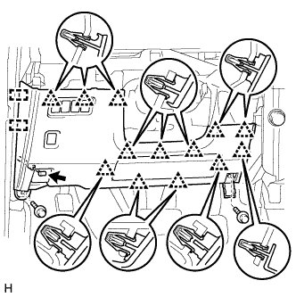

VSC OFF SWITCH > REMOVAL |
| 1. REMOVE DOOR SCUFF PLATE ASSEMBLY LH |
 |
Put protective tape around the door scuff plate.
| *1 | Protective Tape |
Using a screwdriver, detach the 4 clips, 10 claws and 2 guides.
Disconnect the connector and remove the door scuff plate.
| 2. REMOVE COWL SIDE TRIM BOARD LH |
 |
Remove the clip.
Detach the clip and claw and remove the cowl side trim board.
| 3. REMOVE LOWER INSTRUMENT PANEL FINISH PANEL SUB-ASSEMBLY |
 |
Using a screwdriver, detach the 2 claws and open the cover.
| *1 | Protective Tape |
|  |
Remove the 2 bolts <C>.
Detach the 13 clips and 2 guides.
Disconnect each connector and cable and remove the lower instrument panel finish panel.
| 4. REMOVE VSC OFF SWITCH |
Using a screwdriver, detach the 2 claws and remove the VSC OFF switch from the lower instrument panel finish panel.